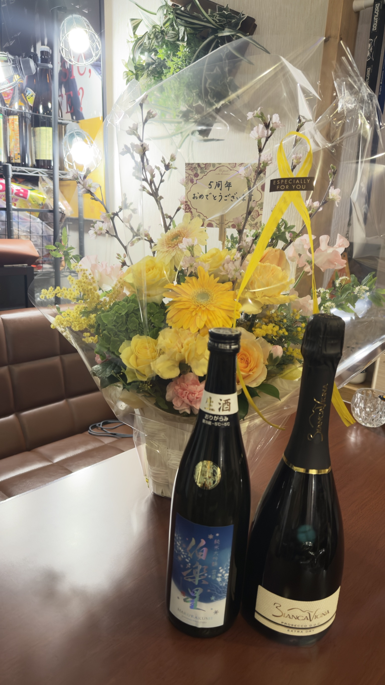

落ち着いた場所で歌とお酒を楽しみたい方

KARAOKE SAKABA / SHIN-KEMIGAWA
カラオケ酒場
ら・ピエ
世代を超えて楽しめる、リビングのような居心地の良さ。
カラオケ、家庭的なおつまみ、お酒を気軽に楽しめます。
Recommended For
こんな方におすすめ
新検見川駅近くで二次会の店を探す方
昼の時間に少人数で予約利用したい方
大きな店より家庭的な雰囲気が好きな方

Concept
リビングのようにくつろげる、世代を超えた歌の場所
ら・ピエは、40代から60代を中心に、世代を超えて歌と会話を楽しめるカラオケ酒場です。大きな店のにぎやかさよりも、リビングのような居心地の良さを大切にしています。初めての方も席につきやすく、飲みながら自然に一曲歌える雰囲気です。
Why Choose Us
選ばれる理由
歌いやすい距離感
広すぎない店内なので、マイクを持つまでの緊張が少なく、会話の延長で歌えます。
お腹も満たせる
合鴨ステーキやおにぎりなど、飲みながら食べやすい一品を用意しています。
初めてでも入りやすい
予約は電話で受付。昼の時間帯も前日までの予約で1名から相談できます。
Menu & Price
メニュー・料金

おすすめ一品
- 合鴨ステーキ800円
- 焼きおにぎりセット店舗確認
- 季節のおつまみ店舗確認
Inside
店内の雰囲気


First Visit
初めての来店の流れ
-
1
人数と時間を連絡
予約はお電話で承ります。昼営業は前日までにご予約ください。
-
2
来店して席へ案内
JR新検見川駅から徒歩3分。迷った時は到着前にお電話ください。
-
3
飲みながら歌う
歌いたい曲を入れて、食事や会話と一緒に楽しめます。
Access
店舗情報・アクセス
- 店名
- カラオケ酒場ら・ピエ
- 営業時間
- 月・火・木・金・土・日 18:00-23:00
- 定休日
- 水曜日
- 昼営業
- 前日までの予約営業。1名から承ります。
- 所在地
- 千葉県千葉市花見川区南花園1丁目42-6
- 最寄り
- JR新検見川駅 徒歩3分
- 電話番号
- 043-305-5833 ※予約はお電話からお願いいたします。 ※お昼の時間帯も前日までのご予約で1名から承ります。 ※お昼は予約営業です。 ※カラオケ/各種パーティー承ります。
- 支払い
- 現金ほか、対応状況は店舗へ確認